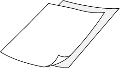
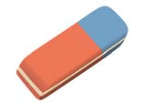

5.
Write the name of the drawing tool and its uses in the following table
| Number | Drawing tool | Name of the tool | Its uses |
|---|---|---|---|
| (i) |  | ||
| (ii) |  | ||
| (iii) |  |
6.Explain how to dry a clay-modelled object.
| Number | Drawing tool | Name of the tool | Its uses |
|---|---|---|---|
| (i) | | ||
| (ii) |  | ||
| (iii) |  |